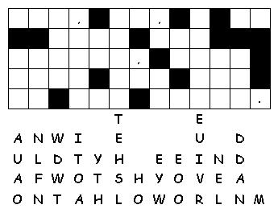

This week's lessons: Genesis 1:1-2:4a, Psalm 8, 2 Corinthians 13:11-13, Matthew 28:16-20
This
week's lessons: Genesis
1:1-2:4a, Psalm
8, 2
Corinthians 13:11-13, Matthew
28:16-20
Middle-School Pew-work
This short passage has many powerful ideas packed into a small space! Which of these four verses speaks to you most powerfully? Why? _________________________________________ ______________________________________________________________________________________________________________________________________________________________________________________________________________________________________________________________________________________________________________________________________________________________________________________________________
Jesus said to teach “whatsoever I have commanded you”. What things can you think of, that Jesus taught, that we must pass on when we teach others? ____________________________________ __________________________________________________________________________________________________________________________________________________________________________________________________________________________________________
|
 |
_____________________________________ _______________________________________________________________________________________________________________________________________________________________________________________________________________________________________________________________________________________________________ |
Next week: Genesis 6:9-22; 7:24; 8:14-19 and Psalm 46 or Deuteronomy 11:18-21, 26-28 and Psalm 31:1-5, 19-24, Romans 1:16-17; 3:22b-28, (29-31), Matthew 7:21-29